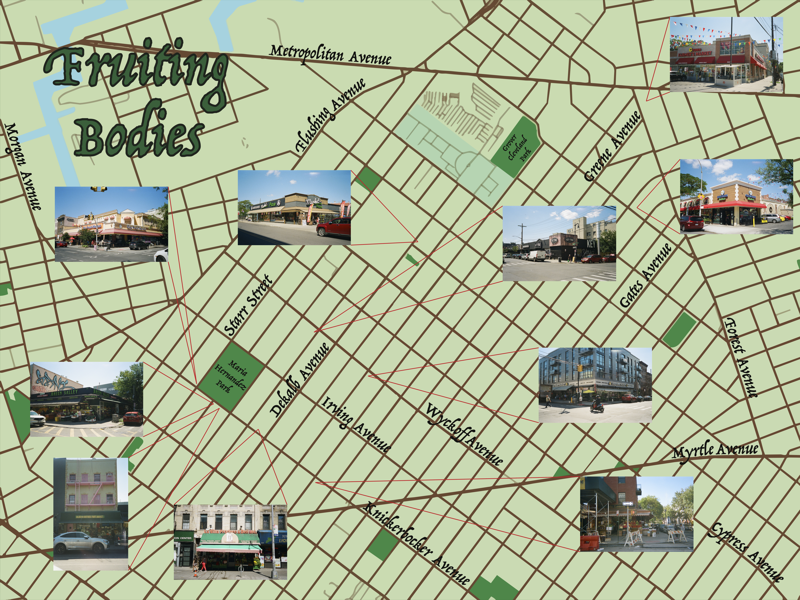
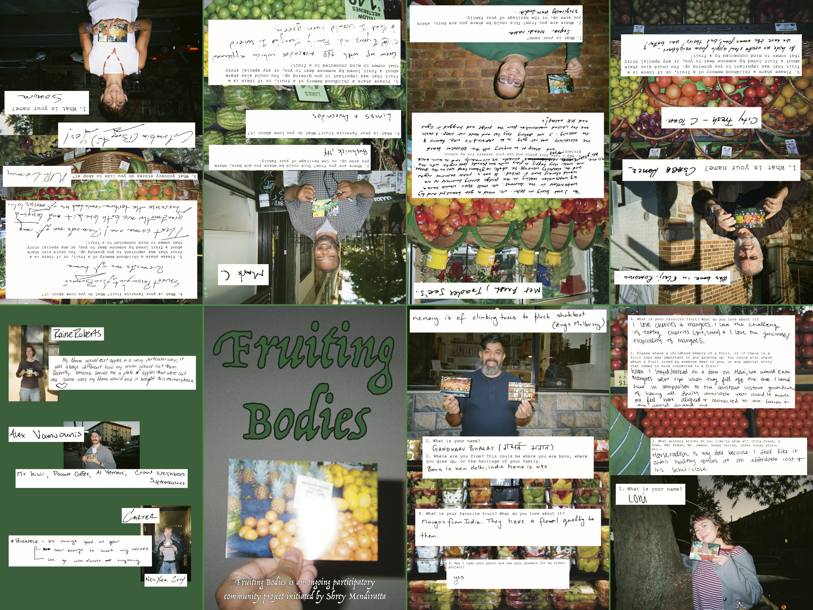

ABSTRACT: Fruiting Bodies engages the visual metaphor of fruit and produce arrangements found in ten different grocery stores located along the walk from my apartment in Ridgewood, Queens to my workplace in Bushwick, Brooklyn. Grocery stores are porous to every community group found in these neighborhoods (and beyond), and fruits hold the power to bring people together, in their cultural histories, seasonality, and optical and gustatory charm.

